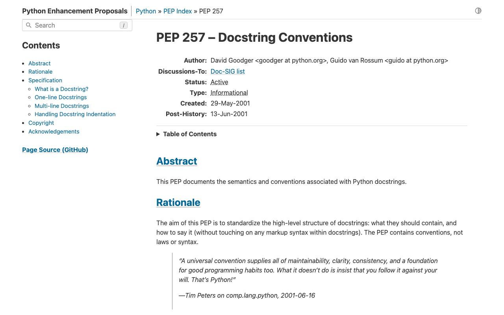
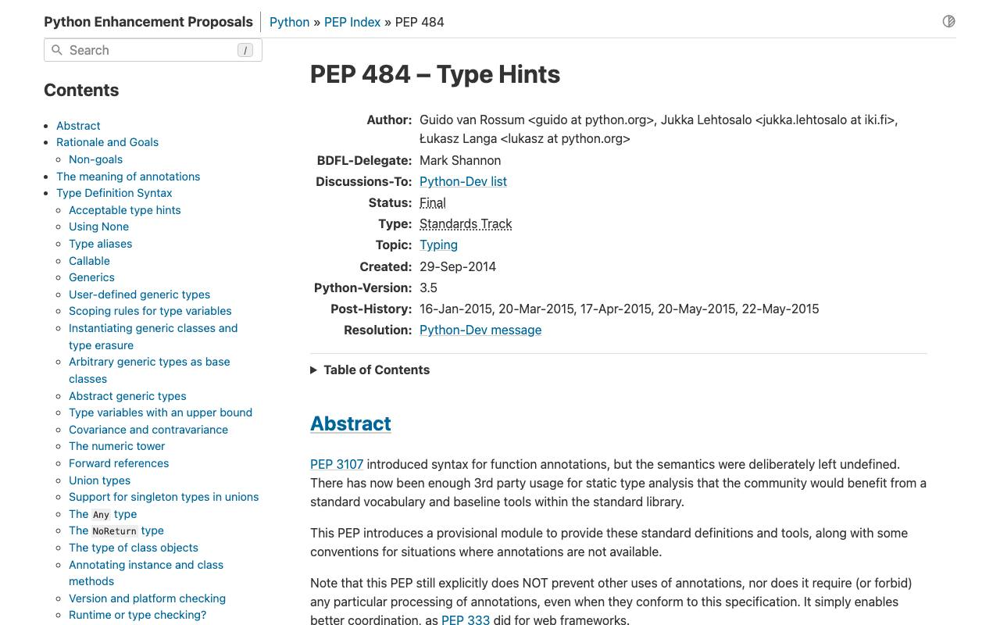
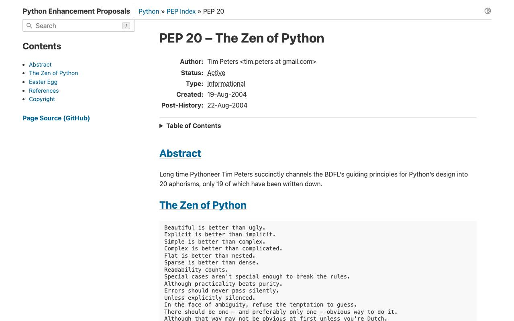

Справочник «Стандарты и сертификаты» · тема 3
Глава 6
Документация в коде:
PEP 257, 484 и 20
Кроме оформления, у кода на Python есть стандарты описания: как писать строки документации, как указывать типы и какими принципами руководствоваться. В главе разобраны PEP 257, PEP 484 и PEP 20 с примерами на одном модуле.
- Документы
- PEP 257 · PEP 484 · PEP 526 · PEP 604 · PEP 20
- Уровень
- Базовый
- Где встречается
- Библиотеки, сервисы с командой больше одного человека
- Зачем это знать
- Чтобы функцию можно было использовать, не читая её тело
§1Строки документации по PEP 257
Строка документации (docstring) — строковый литерал первой строкой модуля, класса или функции. Python сохраняет его в атрибуте __doc__, его показывают help(), подсказки редактора и генераторы документации.
PEP 257 задаёт форму: тройные двойные кавычки; первая строка — краткое описание действия в форме повеления, с точкой в конце; если нужно больше, после неё пустая строка и подробности.
Однострочная строка документации
def age(birth_date):
'''
this function returns age
'''def age(birth_date):
"""Вернуть полное число лет на сегодняшний день."""Слева кавычки одинарные, текст разнесён на три строки и описывает функцию в третьем лице. Справа одна строка-команда: «Вернуть…», как требует PEP 257.
Повторять заголовок не нужно
def load_profile(db, user_id):
"""load_profile(db, user_id) -> dict"""def load_profile(db, user_id):
"""Прочитать профиль ученика из базы по его идентификатору."""Сигнатуру Python и так знает. Строка документации сообщает назначение функции.
def send_report(users, report_date, *, dry_run=False):
"""Отправить отчёт об активных пользователях за день.
Пользователи без адреса почты в отчёт не попадают.
Args:
users: Список словарей с ключами name, email, active.
report_date: День, за который собран отчёт.
dry_run: Если True, отчёт собирается, но не отправляется.
Returns:
Код ответа сервиса отчётов или None при ошибке сети.
Raises:
ValueError: Если report_date в будущем.
"""PEP 257 не задаёт, как описывать параметры. Для этого есть соглашения: стиль Google (разделы Args, Returns, Raises), стиль NumPy (подчёркнутые заголовки) и reStructuredText (:param users:). В проекте выбирают одно.

§2Аннотации типов по PEP 484
Аннотация типа — пометка, какого типа ожидается параметр, переменная или результат. Синтаксис ввёл PEP 3107, смысл аннотаций для типов — PEP 484, аннотации переменных — PEP 526, запись int | None — PEP 604.
Интерпретатор аннотации не проверяет: age("вчера") выполнится и упадёт внутри. Проверяет отдельная программа — mypy или pyright, до запуска.
Функция без аннотаций и с ними
def find_ticket(tickets, ticket_id):
for t in tickets:
if t.id == ticket_id:
return tdef find_ticket(tickets: list[Ticket], ticket_id: int) -> Ticket | None:
for ticket in tickets:
if ticket.id == ticket_id:
return ticket
return NoneСправа по заголовку видно, что функция может ничего не найти. mypy потребует проверить результат на None перед обращением к его полям.
$ mypy tickets.py tickets.py:14: error: Item "None" of "Ticket | None" has no attribute "title" [union-attr] Found 1 error in 1 file (checked 1 source file)
| Запись | Смысл |
|---|---|
x: int = 0 | переменная целого типа, PEP 526 |
list[str] | список строк, начиная с Python 3.9 |
dict[str, int] | словарь со строковыми ключами и целыми значениями |
int | None | целое или None, начиная с Python 3.10 |
Callable[[int], str] | функция, принимающая int и возвращающая str |
-> None | функция ничего не возвращает |

§3«Дзен Python», PEP 20
PEP 20 — 19 коротких принципов, на которых построен язык. Их выводит команда import this. Это не правила для линтера, а доводы, к которым обращаются в спорах о том, как лучше написать.
Beautiful is better than ugly. Explicit is better than implicit. Simple is better than complex. Complex is better than complicated. Flat is better than nested. Sparse is better than dense. Readability counts. Errors should never pass silently. Unless explicitly silenced.
«Явное лучше неявного» на примере
from config import * connect(HOST, PORT)
from config import DB_HOST, DB_PORT connect(DB_HOST, DB_PORT)
Справа читатель видит, откуда взялись значения. Тот же довод стоит за запретом импорта со звёздочкой в PEP 8.
«Ошибки не должны проходить молча»
try:
send_email(user)
except Exception:
passtry:
send_email(user)
except SMTPException:
log.warning('письмо для %s не отправлено', user.id)
raiseСлева сбой отправки исчезает без следа. Справа он записан в журнал и передан выше.

§4Частые ошибки
§5Проверьте себя
- Где Python хранит строку документации и кто её показывает?
- Как выглядит однострочная строка документации по PEP 257? Приведите пример.
- Зачем в аннотации писать Ticket | None, если функция может ничего не найти?
- Проверяет ли интерпретатор аннотации типов при запуске? Чем их проверяют?
- Какие принципы PEP 20 объясняют запрет импорта со звёздочкой и пустого except?
"""тройные двойные"""повеление, точкапустая строка после краткойArgs, Returns, RaisesPEP 484 — смыслPEP 526 — переменныеPEP 604 — int | Nonemypy, pyrightimport thisявное лучше неявногоошибки не молчатчитаемость важнаСправочник «Стандарты и сертификаты» · глава 6Макаров Максим Николаевич